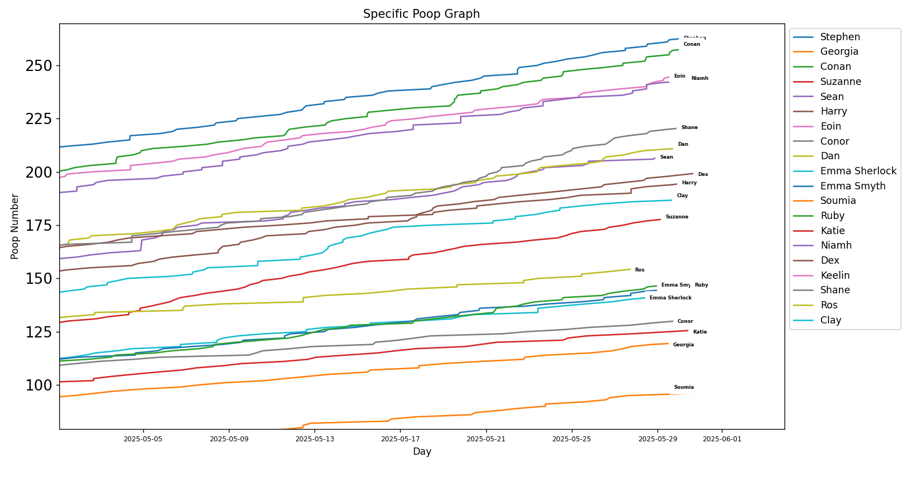
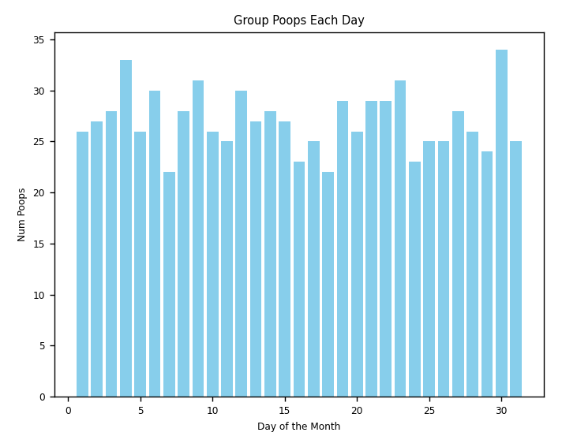
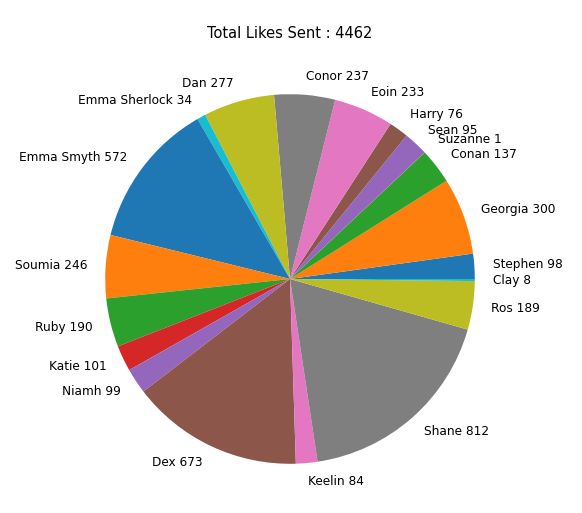
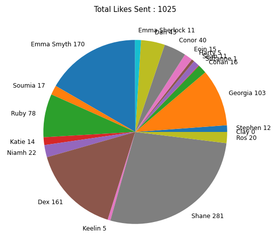

Rankings
In this page we have a set of different group rankings and graphs for you to peruse!
Leaderboard Graph

This graph shows the movement of contestants over the course of the last month and how tight our bumholes are in this race
Poopiest Days of the Month

This graph shows groups number of poops over the course of May each day, clearly we had a strong beginning and a busy 30th probably
in preparation for this update. Nonetheless pretty normalised over the course of the month.
Easiest to Please

This pie chart shows the total amount of likes/reactions sent by each user to any message or meme. Who is the easiest to please
with your content? Does this devalue their liking? Does the reverse happen for those that have liked less things?
Most Supportive Pooper

On the flip-side, when focusing these likes solely on messages that contain an update we may consider these likes as supportive
poop likes, to help you through the process.
Shortest Times Between Poops
- Seán - 4mins 36s
- Clay - 5mins 56s
- Dex - 6mins 34s
- Soumia - 7mins 4s
- Katie - 8mins 40s
- Stephen - 13mins 49s
- Emma Smyth - 14mins 18s
- Conan - 21mins 19s
- Eoin - 27mins 38s
- Ros - 33mins 45s
- Dan - 34mins 11s
- Harry - 40mins 43s
- Niamh - 49mins 11s
- Suzanne - 53mins 17s
- Ruby - 53mins 50s
- Conor - 1hr 6mins 57s
- Shane - 1hr 9mins 35s
- Georgia - 1hr 26mins 12s
- Emma Sherlock - 7hrs 2mins 49s
Longest Time Between Poops
- Stephen - 1day 23hrs 2mins 12s
- Shane - 2days 3hrs 40mins 46s
- Eoin - 2days 10hrs 51mins 54s
- Harry - 2days 23hrs 52mins 46s
- Ruby - 3days 1hr 41mins 45s
- Emma Smyth - 3days 6hrs 57mins 3s
- Conan - 3days 10hrs 36mins 46s
- Katie - 3days 11hrs 10mins 57s
- Dex - 3days 12hrs 8mins 32s
- Clay - 3days 13hrs 3mins 23s
- Suzanne - 3day 18hrs 17mins 11s
- Dan - 3days 20hrs 42mins 43s
- Ros - 3days 23hrs 48mins 4s
- Georgia - 4days 1hr 26mins 12s
- Conor - 4days 2hrs 52mins 43s
- Seán - 4days 16hrs 39mins 20s
- Niamh - 4days 20mins 32mins 26s
- Emma Sherlock - 7days 20hrs 2min 43s
- Soumia - 7days 21hrs 19mins 15s